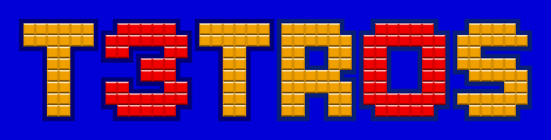

a celebration of 30 years of the enjoyment of TetrisTM
With the discovery that the classic, lovable TetrisTM was turning 30 this year, we three developers came together to create our own edition of the game.
Out of newfound enjoyment for the sheer beauty of ClojureScript, the language of choice was obvious.
See the project repo.

Event Details
T3TR0S will first be enjoyed by PROS employees. Friday, June 6. 4-6pm.
Houston-wide event to follow in the month of June.